Chapter 8 · Part 1 — A Giant Shadow
Jack jumped behind the magnolia tree.
His heart was beating so fast he could hardly think.

He peeked out at the giant monster. The horrible-looking creature was opening and closing his huge jaws. His teeth were as big as steak knives.
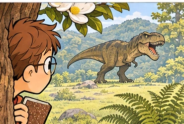
Don’t panic. Think.

Jack peered down at the valley.
Good. The duck-billed dinosaurs were sticking close to their .
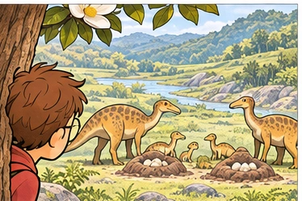
Jack looked back at the Tyrannosaurus.
Good. The monster still didn’t seem to know he was there.

Don’t panic. Think. Think. Maybe there’s information in the book.
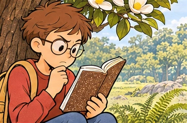
Jack opened the dinosaur book. He found Tyrannosaurus rex. He read:
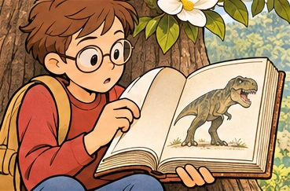
Tyrannosaurus rex was the largest meat-eating land animal of all time. If it were alive today, it would eat a human in one bite.

Great. The book was no help at all.
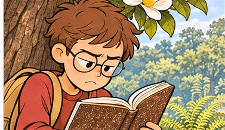
Okay. He couldn’t hide on the other side of the hill. The Anatosauruses might .

Okay. He couldn’t run to the tree house. The Tyrannosaurus might run faster.

Okay. Maybe he should just wait. Wait for the monster to leave.
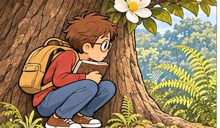
Jack peeked around the tree.
The Tyrannosaurus had wandered closer to the hill.
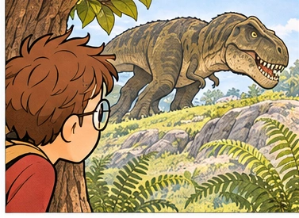
Something caught Jack’s eye. Annie was coming down the rope ladder!

Was she nuts? What was she doing?

Jack watched Annie hop off the ladder.
She went straight to the Pteranodon. She was talking to him. She was flapping her arms. She pointed at Jack, at the sky, at the tree house.
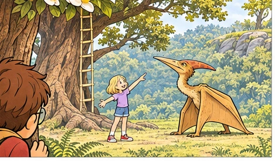
She was nuts!
“Go! Go back up the tree!” Jack whispered. “Go!”
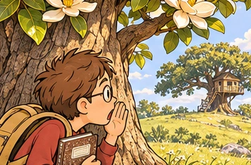
Suddenly Jack heard a roar.
The Tyrannosaurus rex was looking in his direction.

Jack hit the ground.
The Tyrannosaurus rex was coming toward the hill.

Jack felt the ground shaking.
Should he run? Crawl back into Dinosaur Valley? Climb the magnolia tree?
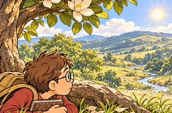
Just then a giant shadow covered Jack. He looked up.
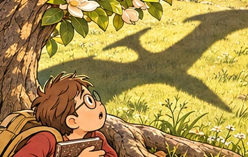
The Pteranodon was overhead. The giant creature sailed down toward the top of the hill.
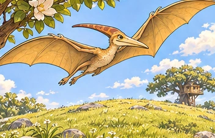
He was coming straight for Jack.